弾むボールのシミュレーション
このデモでは、Simulink® を使用した弾むボールのモデル化に対する 2 種類のアプローチを示します。
目次
概要
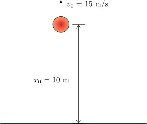
図 1: 10 m の高さから速度 15 m/s でボールを投げ上げる
弾むボールのモデルは、複合動的システムの古典的な例です。複合動的システムとは、連続ダイナミクスに加え、システム ダイナミクスの変化と状態値のジャンプを伴う離散遷移を含むシステムです。弾むボールの連続ダイナミクスは、次のように表すことができます。
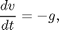
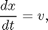
ここで、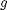 は重力による加速度、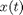 はボールの位置、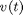 は速度です。したがって、システムには、位置 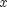 と速度 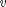 という 2 つの連続状態があります。
モデルの複合システムとしての側面は、ボールと地面の衝突のモデル化に由来しています。地面との部分的な弾性衝突を考えた場合、衝突前の速度 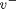 と 衝突後の速度 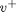 は、ボールの反発係数 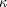 により次のように表すことができます。
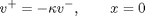
したがって、弾むボールは、遷移状態 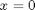 における連続状態 (速度) のジャンプを示します。
弾むボールは、Zeno 現象を示す最も簡単なモデルの 1 つです。Zeno 動作の簡略的な特徴として、特定の複合システムに対して一定の時間間隔で無限個のイベントが発生することが挙げられます。弾むボールのモデルではボールがエネルギーを失うにつれ、連続したより短い時間間隔で地面との多数の衝突が発生するようになります。つまり、モデルは Zeno 動作を発生します。Zeno 動作のモデルは、コンピューターでシミュレートするのは本質的に困難ですが、多くの重要な工学アプリケーションでよく見られます。
2 つの Integrator ブロックを使用した弾むボールのモデル化
2 つの Integrator ブロックを使用して弾むボールをモデル化できます。左の Integrator は、最初の式をモデル化した速度の積分器で、右の Integrator は位置の積分器です。Position Integrator ブロック ダイアログに移動して、下限が 0 になっていることを確認します。この条件は、ボールが地面より下になることはないという制限を表します。
位置の積分器の状態端子と対応する比較結果は、ボールが地面に当たるタイミングを検出し、両方の積分器をリセットするために使用されます。速度の積分器の状態端子は、 の計算に使用されます。
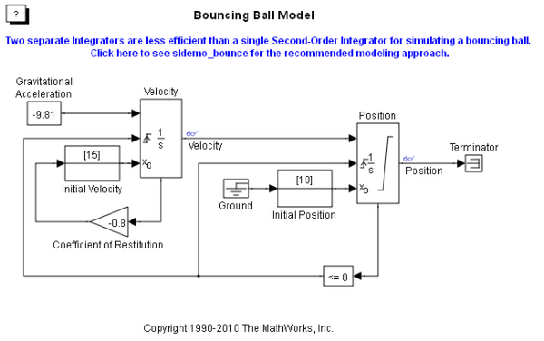 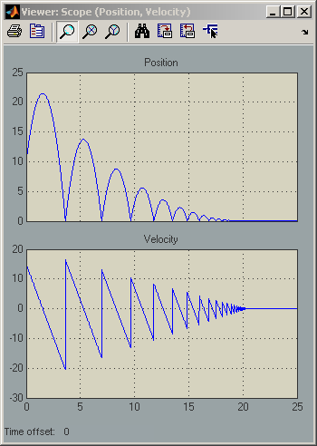システムの Zeno 動作を観察するには、[コンフィギュレーション パラメーター] ダイアログ ボックスの [ソルバー] ペインに移動します。[ゼロクロッシング オプション] セクションで、[アルゴリズム] が [非適応] に設定され、シミュレーションの [終了時間] が 25 秒に設定されていることを確認します。シミュレーションを実行します。
ボールが何度も地面に当たり、エネルギーを失うと、シミュレーションがエラーになることを確認します。必然的に、シミュレーションは [連続的なゼロクロッシングの許可数] の既定の限界である 1000 を超過します。次に、[コンフィギュレーション パラメーター] ダイアログ ボックスに移動します。[ゼロクロッシング オプション] セクションで、[アルゴリズム] を [適応] に設定します。このアルゴリズムにより、このようなチャタリング動作に対して高度な処理が行われます。そのため、システムを 20 秒以上シミュレートできるようになります。ただし、21 ～ 25 秒の間の状態のチャタリングと、20 秒前後におけるモデルの強力なチャタリングに関する Simulink の警告に注意してください。
Second-Order Integrator ブロックを使用した弾むボールのモデル化
1 つの Second-Order Integrator ブロックを使用して、このシステムをモデル化できます。2 番目の式 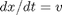 は、この場合の Second-Order Integrator ブロックに内包されています。Second-Order Integrator ブロック ダイアログに移動すると、先ほどと同じように、 の下限が 0 になっています。ブロック ダイアログの [属性] タブに移動し、[x が飽和に達した時に、dx/dt を再初期化] オプションがオンになっていることを確認します。このパラメーターにより、 が飽和制限に達した瞬間に、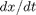 (弾むボールのモデルの ) を新しい値に再初期化できます。つまり、弾むボールのモデルでは、このオプションは、ボールが地面に当たるとその速度を異なる値、すなわち衝突後の速度に設定できることを意味します。地面との衝突後の速度を計算するためのループに注意してください。衝突直前のボールの速度 を取得するには、Second-Order Integrator ブロックの 出力端子と Memory ブロックを使用します。その後、 を使用して、跳ね返りの速度 を計算します。
 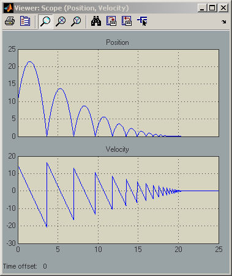
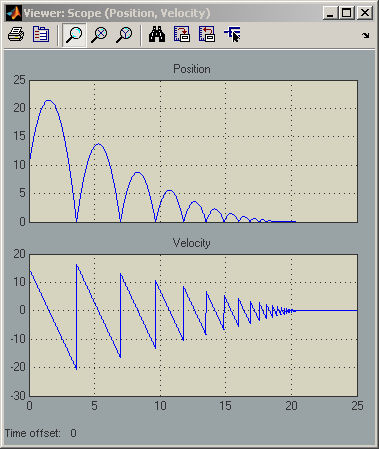 [コンフィギュレーション パラメーター] ダイアログ ボックスの [ソルバー] ペインに移動します。[ゼロクロッシング オプション] セクションで、[アルゴリズム] が [非適応] に設定され、シミュレーションの [終了時間] が 25 秒に設定されていることを確認します。モデルをシミュレートします。シミュレーションでエラーが発生しないことを確認します。[アルゴリズム] を [適応] に設定しなくても、t = 20 秒後に過度のチャタリングを起こすことなく、モデルをシミュレートできました。
弾むボールのモデル化に対する望ましいアプローチは Second-Order Integrator ブロック
各跳ね返りに必要な時間を合計することにより、速度が 0 になってボールが地面に停止するときの正確な時間 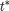 を分析的に計算できます。この時間は、次の式で表される無限等比級数の合計です。
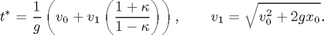
ここで、 および 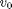 は、それぞれ位置と速度の初期条件です。ボールの速度および位置は、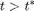 では、同様に 0 でなければなりません。下の図には、 近辺の両方のシミュレーションの結果が示されています。プロットの垂直の赤い線は、指定されたモデル パラメーターに対する です。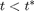、および から離れた範囲では、どちらのモデルも正確な同じ結果を示します。そのため、プロットには 2 番目のモデルのマゼンタの線のみが示されています。ただし、最初のモデルのシミュレーション結果は、 以降不正確で、 の範囲では過度のチャタリング動作を示します。一方、Second-Order Integrator ブロックを使用した 2 番目のモデルの場合、 の範囲では正確に 0 で停止しています。
および 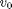 は、それぞれ位置と速度の初期条件です。ボールの速度および位置は、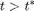 では、同様に 0 でなければなりません。下の図には、 近辺の両方のシミュレーションの結果が示されています。プロットの垂直の赤い線は、指定されたモデル パラメーターに対する です。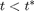、および から離れた範囲では、どちらのモデルも正確な同じ結果を示します。そのため、プロットには 2 番目のモデルのマゼンタの線のみが示されています。ただし、最初のモデルのシミュレーション結果は、 以降不正確で、 の範囲では過度のチャタリング動作を示します。一方、Second-Order Integrator ブロックを使用した 2 番目のモデルの場合、 の範囲では正確に 0 で停止しています。

図 2: 2 つのアプローチのシミュレーション結果の比較
図 2 から、最初のモデルに比べて 2 番目のモデルが優れた数値特性を持つことは明らかです。Second-Order Integrator モデルが高い精度を伴う理由は、次のとおりです。2 番目の微分方程式 は、Second-Order Integrator ブロックに内包されています。したがって、ブロック アルゴリズムでは、2 つの状態の間で判明している関係を利用して、経験則により特定の条件における望ましくないチャタリング動作を排除することができます。このような経験則は、積分の誤差とチャタリング動作により、2 つの状態の整合性が相互に失われた場合に有効です。このように、システムの物理的な知識を活用して、特定のクラスの Zeno モデルのシミュレーションが Zeno 状態に陥る問題を軽減することができます。